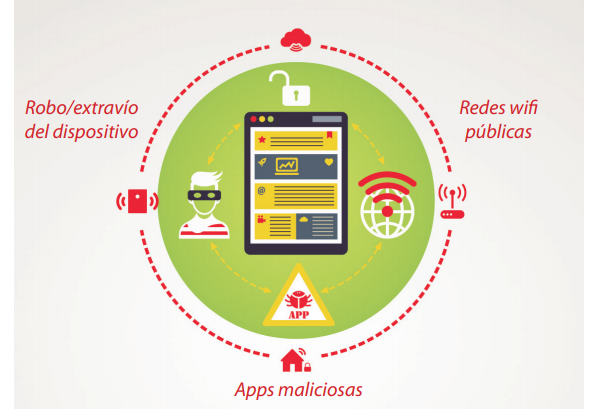
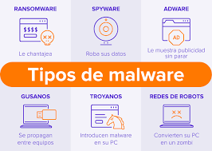
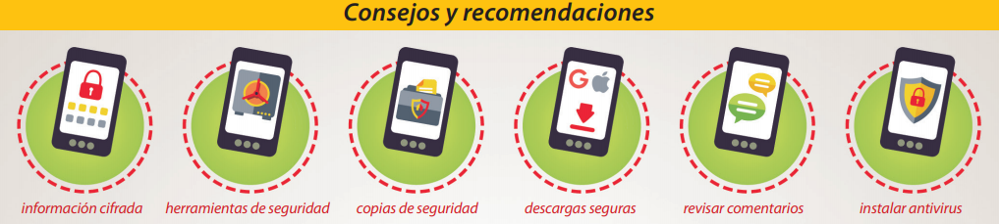

Navegar por Internet tiene innumerables ventajas pero también la web puede ser utilizada para atacar a la sociedad. Tiene muchos tipos de peligros y amenazas para nuestra seguridad, privacidad, y que afectan a nuestros dispositivos. Todos los internautas podemos ser víctimas de un ciberdelito.
En relación a los peligros y amenazas, pueden efectuarse Delitos contra la confidencialidad, la integridad y la disponibilidad de los datos, contenidos y sistemas informático al tener acceso ilícito a sistemas informáticos, Interceptación ilícita de datos informáticos, Interferencia en el funcionamiento de un sistema informático.
De esta forma, lograr la falsificación informática mediante la introducción, alteración, borrado o supresión de datos informáticos. Así como robar las contraseñas, identidad, datos personales, provocar un mal funcionamiento de los sistemas. En el caso de los contenidos los delitos están relacionados con su producción, oferta, difusión, transmisión, adquisición o tenencia, en sistemas o soportes informáticos, o contenidos de pornografía infantil.
.
.
Ciberdelitos
De acuerdo a Avilés (2013) en su libro X1Red+Segura. Informando y Educando V1.0, los principales delitos que tienen presencia en la vida virtual se podrían clasificar dentro de los siguientes grupos:
Protección de la juventud y la infancia:
- Pornografía infantil.
- Captación y tráfico de menores.
- Amenazas o acoso y hostigamiento a menores.
- El acoso escolar o bullying.
.
Derecho al honor, a la intimidad o a la imagen propia:
- La difamación en Internet.
- La transmisión no autorizada de datos.
- El envío de correo no autorizado o spam.
.
Protección de la privacidad y al servicio de las comunicaciones:
- Obtención ilícita de datos personales.
- Interceptación de correos electrónicos.
.
Seguridad de la información:
- Accesos no autorizados a sistemas informáticos.
- Daños en sistemas informáticos.
- Revelación de secretos.
Protección de la dignidad humana:
- Propagación de los materiales que inciten al odio, racismo, antisemitismo u otro tipo de discriminación en función del sexo, religión, origen u orientación sexual.
- Propagación de materiales y discursos con violencia extrema o sangre desmesurada (gore).
- Incitación al suicidio.
- Incitación a la anorexia y bulimia.
.
Propiedad del mercado, consumidores y seguridad económica:
- Estafas digitales.
- Fraudes informáticos.
- Falsificaciones documentales.
.
Seguridad nacional:
- Actividades terroristas.
- Instrucciones sobre preparación de bombas.
- Producción y venta de drogas a través de la Red.
.
Propiedad Intelectual:
- Distribución no autorizada de obras registradas.
¿Cómo suceden?

Las amenazas web que pueden atacarte al utilizar Internet incluyen una gama de programas de software malicioso (malware) diseñados para infectar los equipos de las víctimas. Pueden localizarse como actualizaciones Falsas, aparecen en forma de mensaje de alerta de necesidad de actualización de alguna aplicación. Al acceder al link falso o descargar se baja un software malicioso. El malware destructivo buscará la manera de explotar las vulnerabilidades del sistema, utiliza además herramientas de comunicación populares para extenderse, incluyendo gusanos enviados a través de e-mails y mensajes instantáneos, troyanos que entran a través de páginas Web y archivos infectados por virus descargados en conexiones directas entre usuarios.
Una vez que se abre y cargue un programa o archivo adjunto infectado, puede que no se vean resultados en el equipo de un modo inmediato. Estos son algunos indicadores que pueden advertirte de que tu equipo ha sido infectado:
- Va más despacio de lo normal.
- Deja de responder o se bloquea a menudo.
- Se queda paralizado y se reinicia por sí solo tras unos minutos y no funciona de un modo normal.
- Se observan mensajes de error fuera de lo normal.
- Aparecen menús y cuadros de diálogo distorsionados.
Por otro lado, en el caso de la Amenaza phishing, los phishers se hacen pasar por empresas legítimas (usan imágenes con copyright procedentes de páginas genuinas) a través de spam, páginas Web, e-mails o mensajes instantáneos para solicitar información y hacer que las personas divulguen información delicada, como información bancaria y de tarjetas de crédito, o acceso a cuentas personales. También pueden avisar de que es necesaria una acción urgente para provocar que los destinatarios descarguen programas malintencionados en los equipos electrónicos. Los Bots en redes sociales, pueden robar información personal al hacerse pasar por un usuario legítimo en redes sociales como Facebook o Instagram. En el Grooming, un adulto (denominado groomers) realiza una serie de acciones en la red para ganarse la amistad de un menor de edad y abusar sexualmente de él. El cyberbulling implica el acosar y hostigar de forma premeditada a una persona o grupo difundiendo falsos rumores, vídeos o fotos humillantes, así como amenazar con publicar información personal. Entre otras denominaciones de amenazas en la red.
.
¿Cómo pueden protegerse?

Para protegerse de los peligros y amenazas es importante seguir una serie de recomendaciones para el uso de redes sociales u otras páginas, como es la detección adecuada de sitios legítimos, uso de contraseñas correctas, huella digital, antivirus, utilización de wifi privadas, entre otras.
Ver las recomendaciones y sugerencias establecidas en los siguientes enlaces:
- Guía de seguridad en redes sociales
- How to determine if a website is a fake, fraud or scam
- Cómo saber si un sitio web es legítimo
- Guía de Privacidad y Seguridad en Internet
- X1Red+Segura. Informando y Educando V1.0 Páginas 55-56, 83-172.
.
Estafadores tecnológicos.
Fraude online
Un worm o gusano informático es similar a un virus por su diseño y es considerado una subclase de virus.
El troyano parece ser un programa útil, pero en realidad hará daño una vez instalado o ejecutado en tu equipo. Algunos troyanos se diseñan para ser molestos como cambiar el escritorio agregando iconos de escritorio activos tontos, mientras que otros pueden causar daño serio, suprimiendo archivos y destruyendo información del sistema.
Correo electrónico no solicitado, no deseados o con remitente no conocido, que se envía a un gran número de destinatarios con fines publicitarios o comerciales.